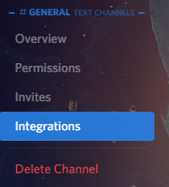
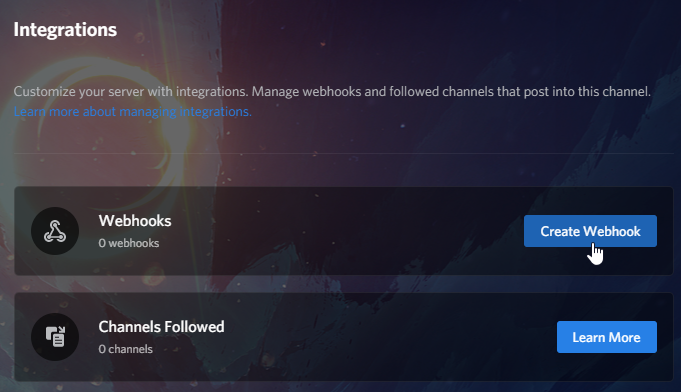
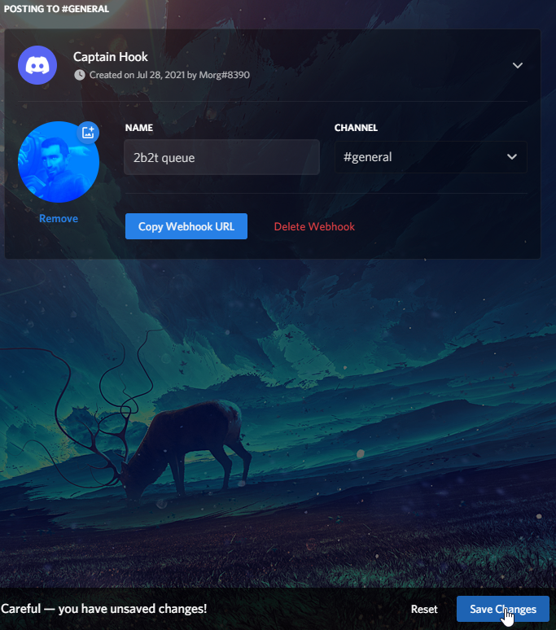
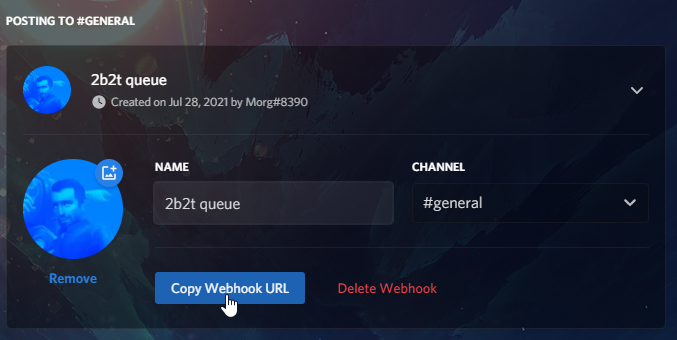

Hello everyone! I hope you all are doing well.
I made a Discord Webhook Script for you to use today!
This script is for the people out there who play on the Minecraft Anarchy Server, 2b2t.org!
A bit of backstory, 2b2t is a Minecraft Server with virtually no rules (therefore coined, an anarchy server.)
Ever since 2016, due to the massive influx of players, 2b2t has added a queue system. This queue is usually very large, and at one point, had almost 2.4k players waiting in it!
Now obviously, not everyone is willing to wait that long, therefore, there is a Priority Queue!
How it works is that if you pay a certain amount a month, you have access to a queue that has priority over the normal one, and therefore, you don't have to wait as long!
Anyway, back to the script.
This script is rather simple. All it does is output the queue status of both the normal and priority queue (via the 2b2t.io API) to a Discord Webhook!
It's set to do it on loop every 10 minutes, but it is possible to change the wait time. More on that later, though.
Discord Webhooks are a way to interact with a Discord Server via WebAPI Calls. The feature we will be taking advantage of is the ability to send messages with it.
Note that this script was written with Ubuntu-Linux Based Distros, and Raspbian Linux in mind. It may work with other Linux Distros, but I haven't tested.
So without further adieu, let's get to how to use it!
Open your Discord Server, and find the channel you wish to have the bot output to.
Open it's settings and click "Integrations".
Click "Create Webhook"
Give your webhook a name, and image, then click "Save changes" at the bottom of the screen.
Click "Copy Webhook URL"
The Webhook API URL will be copied to your clipboard.
Log into your server as the user you wish to run the script under, and update apt
sudo apt update
Install the following prerequisite programs: jq, cURL, and Screen.
sudo apt install jq curl screen
Press Y, then Enter/Return if prompted.
Next, we need to set an environment variable for your Webhook URL.
Open .bashrc in nano
nano ~/.bashrc
Scroll to the very bottom of the file and add the following line:
export twobqwebhook=[webhook url]
Be sure to replace [webhook url] with your actual Discord Webhook URL. It should be in your clipboard.
Press CTRL+S to save the text file, then CTRL+X to exit Nano.
Restart your server with:
sudo reboot now
After the server reboots, download the script from here, or run this command on your server:
curl -O https://morgs9.xyz/journal/2021-07-29/files/2b2tqueuehook.sh
Open Screen with:
screen
If you get the error:
Directory '/run/screen' must have mode 777.
Keep scrolling! A fix is below.
Press Enter
Run this command:
bash 2b2tqueuehook.sh
If you did everything right, you should see the queue status appear in that discord channel!
Finally, press CTRL+A then CTRL+D.
Done!
If you wish to stop the script, run the command:
screen -r
Then press CTRL+C, then CTRL+D.
Now if you wish to change the time interval between sends, follow along.
Note that if you set it to go too fast, you might hit the Rate Limit of 2b2t.io's API.
If you haven't already, stop the script with the instructions above.
Open the script in Nano with:
nano 2b2tqueuehook.sh
Find the line containing:
sleep 600
Change the 600 to whatever time you want, in seconds.
Press CTRL+S to save, then CTRL+X to exit.
Now use the instructions above to relaunch the script.
If you get the error Directory '/run/screen' must have mode 777. when attempting to run screen, run this command:
sudo chmod 777 /run/screen
and try again.
That about wraps it up!
If you have any more questions or if you have any suggestions for either the post, or the script, e-mail me at MorgS9@pm.me.
Thanks for reading, Have a good day!